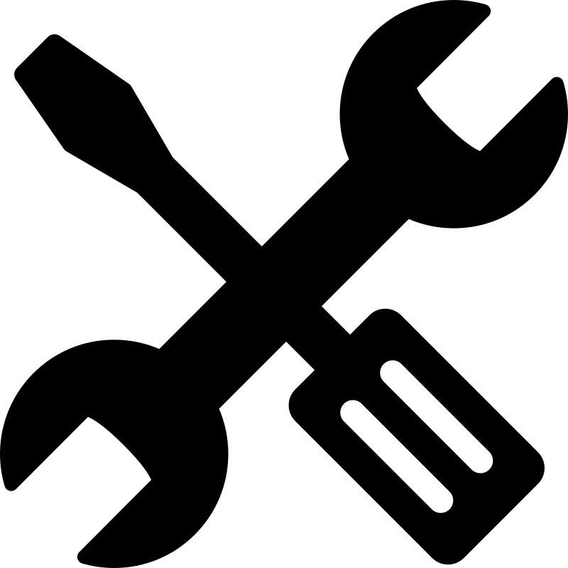
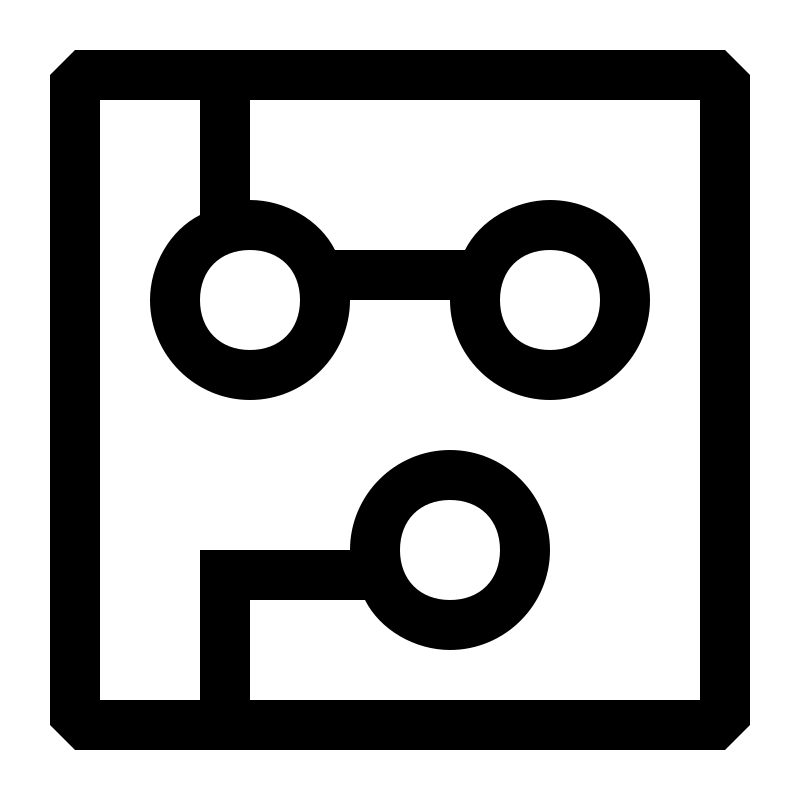
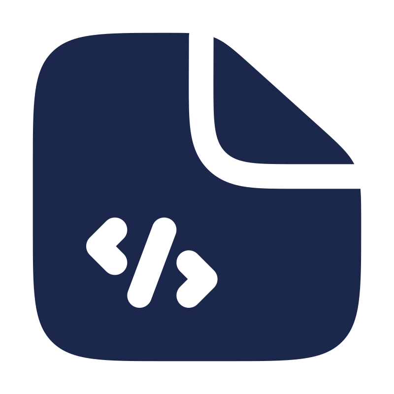

Mecânica
Projeto e montagem das estruturas e sistemas de locomoção dos robôs.
IFMA · Campus Santa Inês
Ad astra per aspera
Núcleo de robótica e programação do Instituto Federal do Maranhão, Campus Santa Inês. Projetamos, construímos e competimos, rumo às estrelas.
Sobre o núcleo
O Robotic Órion reúne estudantes do IFMA — Campus Santa Inês interessados em eletrônica, mecânica e programação. Projetamos, construímos e colocamos robôs à prova em competições nacionais, aplicando na prática o que aprendemos em sala de aula.
Além da parte técnica, o núcleo é um espaço de formação: aqui se aprende trabalho em equipe, gestão de projetos e resolução de problemas sob pressão — habilidades que vão além da robótica.
Como trabalhamos

Projeto e montagem das estruturas e sistemas de locomoção dos robôs.

Circuitos, sensores e atuadores que dão vida aos projetos.

Lógica de controle, autonomia e integração dos sistemas.
Organização de equipe, parcerias e presença do núcleo fora do laboratório.
Resultados
Momentos da equipe